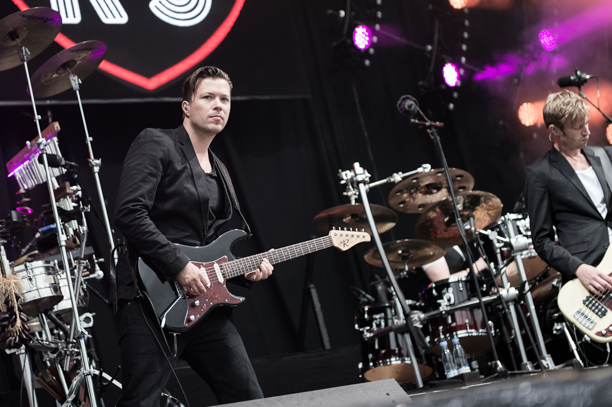
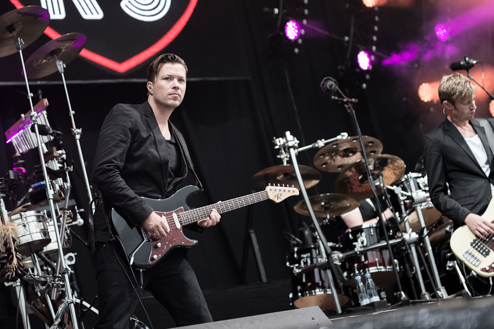

Velkommen til George Guitars hjemmeside!
Her kan du finde information om denne musiker.
Her kan du finde information om denne musiker.
Georg Guitar (født Georg Rasmussen) er en dansk guitarist og singer-songwriter, der har spillet musik siden han var 12 år. Han startede i små lokale bands, men har gennem de seneste år arbejdet mere professionelt som solomusiker. Hans karriere er begyndt at tage fart, og han har derfor brug for en professionel profilhjemmeside, der kan bruges til at præsentere ham som artist, skabe kontakt til spillesteder og gøre det let for fans at finde hans musik.
 

Vega Ideal Bar, København
Musikhuset Aarhus
Tønder Festival – Rookie Stage
Kulturhuset Islands Brygge
Georg Guitar har udgivet flere singler og en EP, der har fået positiv omtale i musikmedier. Hans musik kan findes på streamingtjenester som Spotify og Apple Music. Han skriver selv sine sange, der ofte handler om personlige oplevelser og følelser.
Email:booking@georgguitar.dk
Telefon: +45 12 34 56 78
Links til SoMe: